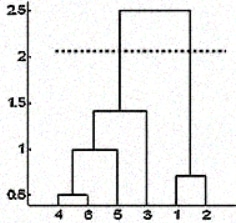

Lab Assignment 03: Hierarchical Clustering Analysis
Objective: In this lab, you will explore the Loan dataset to:
- Drop columns
- Perform data normalization
- Remove outliers
- Use seaborn to visualize clusters
- Apply scipy for hierarchical clustering
- Interpret results
Instructions
Make sure to answer any questions marked as QUESTION (in bold)
Submission: code cells should be executed and show the output and graphs. If you have collaborated with another student, state their name, but the submission and the notebook must be individual (no shared URL allowed). Set the Shared URL Link to Viewable publicly and paste the link to Gradescope assignment Lab02
Step 0. Understanding Hierarchical Clustering
The hierarchical clustering approach is one of the techniques used in unsupervised machine learning
In the figure below, at first 4 and 6 are combined into one cluster, say cluster 1, since they were the closest in distance followed by points 1 and 2, say cluster 2. After that 5 was merged in the same cluster 1 followed by 3 resulting in two clusters. At last the two clusters are merged into a single cluster and this is where the clustering process stops.
To approximate the number of clusters, you can leverage the results from the dendrogram by cutting the dendrogram tree with a horizontal line at a height where the line can traverse the maximum distance up and down without intersecting the merging point. In the above case it would be between heights 1.5 and 2.5 as shown. If you make the cut as shown you will end up with only two clusters (but this is not a hard rule).
Step 1. Loan dataset (15pts)
Import pandas, seaborn, matplotlib, scipy
Download loan data from kaggle Link
-
Import pandas, seaborn, matplotlib, scipy
-
Import data and name it loan_data
Display the first 5 columns
Check for null values
- Are there any null values in this dataset?
Step 2 Preprocessing (20 Points)
We are going to analyze the loan data using all the columns except the following: Purpose and Not.fully.paid. Recall that axis=1 refers to a column dimension.
cleaned_data = loan_data.drop(['purpose', 'not.fully.paid'], axis=1)- We want to check for outliers. Create a box plot to visualize outliers:
plt.rcParams['figure.figsize'] = [14,6] sns.boxplot(data = cleaned_data) # add title "Outlier Distribution" # Add y-axis label "Range" # Add x-axis label "Attributes" plt.show()If you want to adjust font, you can add fontsize = 16 or add fontweight = 'bold'
plt.title("MyTitle", fontsize=16) - To remove outliers, we are going to use IQR (interquartile range = remember the box in boxplot from Q1 to Q3). Note, Traditionally Q1 and Q3 are .25 and 0.75. Sometimes with outliers we use 0.5 and 0.95 to trim down the amount of data in outliers
- IQR is the difference between Q1 and Q3
- To get Q1 and Q3 (replace MyColumn with the name of the column with outliers
- Outlier is a point that lies outside of the range:
lower_bound = Q1 - 1.5*IQR upper_bound = Q3 + 1.5*IQR - Create a copy of dataframe (we do not want to modify the actual data)
df = cleaned_data.copy() - Use the calculated lower_bound and upper_bound to filter the rows in df:
df = df[(df["MyColumn"] >= lower_bound) & (df["MyColumn"] <= upper_bound)] - df is going to be your dataset for the next steps
- Repeat the boxplot figure using df now: sns.boxplot(data = df)
- Rescale data. Hierarchical clustering uses distance metrics (e.g., Euclidean or Manhattan distance) to build a dendrogram. Z-score standardization (StandardScaler) ensures all features contribute equally to the distance calculations by centering them around 0. The rescaled dataset will be called scaled_data. Use StandardScaler from sklearn (see documentation)
Q1 = cleaned_data["MyColumn"].quantile(0.05) #note usually it is 0.25
Q3 = cleaned_data["MyColumn"].quantile(0.95) #note usually it is 0.75
Step 3 Clustering (15 Points)
There are three standard ways to measure the nearest pair of clusters before merging them: (1) Single linkage, (2) Complete linkage, and (3) Average linkage. For more information see link
- Import scipy
from scipy.cluster.hierarchy import linkage, dendrogram - Apply complete linkage method
complete_clustering = linkage(scaled_data, method="complete", metric="euclidean") - Visualize the dendrogram. The x-axis of the dendrogram represents the samples in the data.
The y-axis represents the distance between those samples. The higher the line, the more dissimilar are those samples/clusters.
dendrogram(complete_clustering) plt.show() - Use linkage method="average" and visualize it
- Use linkage method="single" and visualize it
- The optimal number of clusters can be obtained by identifying the highest vertical line that does not intersect with any other clusters (horizontal line)
- How many clusters do you identify using complete linkage?
- How many clusters do you identify using average linkage?
- How many clusters do you identify using single linkage?
- What number of clusters makes more sense to you? Explain.
Step 4 Interpretation (20 Points)
Let's assume that you found 2 clusters as the optimal number!
- Revisit Kaggle dataset website and read what was the main purpose of the loan data (what it was supposed to predict or classify?). Write down the purpose. This is what is called your prior knowledge about dataset
- let's look at the clusters mean based on the borrower’s credit score. We are going to cut clusters into 2. cut_tree from scipy will return array:
from scipy.cluster.hierarchy import cut_tree cluster_labels = cut_tree(average_clustering, n_clusters=2) cluster_labels[:10] - Modify the code by reshaping the array output
cluster_labels = cut_tree(average_clustering, n_clusters=2).reshape(-1, ) cluster_labels[:10] - We are going to add a new column to the dataset to store cluster groups
df["Cluster"] = cluster_labels - Display the borrower's credit score mean based on the cluster data
sns.boxplot(x="Cluster", y="fico", data=df) plt.show()
- What difference did you notice when you applied reshape? What was its purpose?
- Explain the results of the boxplot
- Why do you think we did not plot the scaled_data but plot the actual data (df) in the last plot?
- Name one interesting thing that you learned from the Lab?
Note: The results of the clustering can be further used as labels for ML modeling
Grading Rubrics
- Step 1 Loan Dataset 15pts (all questions are answered)
- Step 2 Preprocessing 20pts
- Step 3 Clustering 30pts
- Step 4 Interpretation 20pts (all questions are answered)
- Submission, Code, Format, Help citation (15 Points)